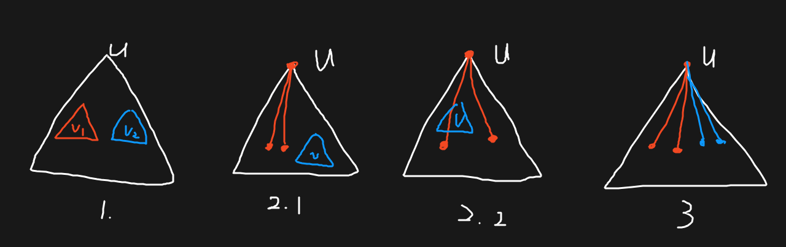
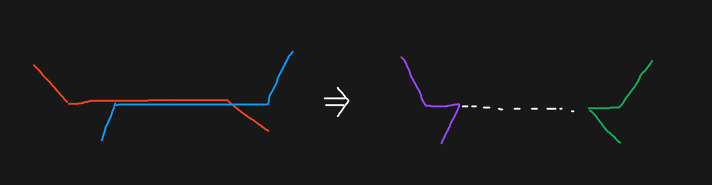
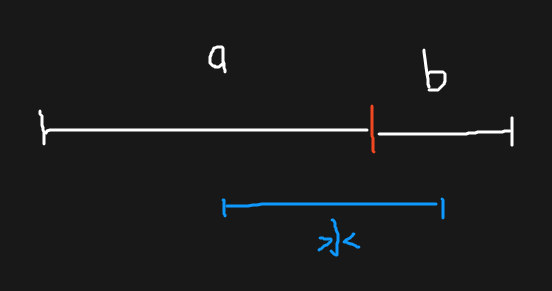

键入以搜索…
匹配算法：把输入按空格拆分，单独匹配每一段输入（不区分大小写，仅匹配文章文本内容），输出取或后的结果。
模糊搜索似乎很难搞，目前没有相关打算。
键入以搜索…
匹配算法：把输入按空格拆分，单独匹配每一段输入（不区分大小写，仅匹配文章文本内容），输出取或后的结果。
模糊搜索似乎很难搞，目前没有相关打算。

https://codeforces.com/problemset/problem/183/D
如果知道一个衣服序列，怎么算出期望呢？
https://codeforces.com/problemset/problem/813/D
如果设 \(f_{i,j}\) 表示第一个以 \(i\) 结尾，第二个以 \(j\) 结尾的方案数，就会有一个弊端——假设现在有 \(i>j\)，又假设有 \(j<j'<i\)，那么就不可以直接把 \(f_{i,j}\) 转移到 \(f_{i,j'}\)，因为 \(j'\) 可能已经被第一个选过了。但如果从 \(i\) 转移就没有这样的问题（不管 \(i'\) 是比 \(j\) 大还是比 \(j\) 小）。
那就可以固定从较大的一维转移，也可以枚举所有情况。但是这样就会有一个问题，这是一个 \(n^3\) 的过程，而且对于不单调的内层 \(j\)，维护它的数值只能用带 \(\log\) 的数据结构优化，似乎不太过得了；但 \(i\) 却可以前缀优化。
其实，两个组是无序的，这意味着可以强制 \(i>j\) 再从 \(i\) 转移；这个时候转移就和 \(j\) 没有太大的关系了，可以把 \(j\) 放到外层，对 \(i\) 前缀优化。可能需要注意边界的处理。
#include <bits/stdc++.h>
int main() {
#ifdef ONLINE_JUDGE
std::ios::sync_with_stdio(false);
std::cin.tie(nullptr), std::cout.tie(nullptr);
#else
std::freopen(".in", "r", stdin);
std::freopen(".out", "w", stdout);
#endif
int n, res = 0;
std::cin >> n;
std::vector<int> a(n + 1);
for (int i = 1; i <= n; ++i)
std::cin >> a[i];
std::vector<std::vector<int> > f(n + 1, std::vector<int> (n + 1));
for (int j = 0; j < n; ++j) {
std::vector<int> mx(100002), mmx(7);
for (int i = 1; i < j; ++i) {
mx[a[i]] = std::max(mx[a[i]], f[j][i]);
mmx[a[i] % 7] = std::max(mmx[a[i] % 7], f[j][i]);
}
for (int i = j + 1; i <= n; ++i) {
f[i][j] = std::max({ !!i + !!j, mx[a[i] - 1] + 1, mx[a[i] + 1] + 1, mmx[a[i] % 7] + 1, f[j][0] + 1 });
mx[a[i]] = std::max(mx[a[i]], f[i][j]);
mmx[a[i] % 7] = std::max(mmx[a[i] % 7], f[i][j]);
// printf("f[%d][%d] = %d\n", i, j, f[i][j]);
res = std::max(res, f[i][j]);
}
}
std::cout << res << '\n';
return 0;
}https://codeforces.com/problemset/problem/633/F
树形 DP 求直径的时候，有一种方法是找到每个点下面的最大两条不交链。
这里也可以有类似的求法。假设答案出现在子树 \(u\) 中（下面的 \(v_i\) 都是 \(u\) 的直接儿子），可以讨论 \(u\) 参与构成两条路径的情况：
不参与构成任何一条路径，答案是 \(v_1,v_2\) 子树中的最长路径之和。
参与构成其中一条：
参与构成其中两条，答案是 \(u\) 下面最长的四条链：路径重复经过 \(u\)，不可能发生。

可以记录 \(u\) 下方最大的四条不交链、\(u\) 中选取一条不经过 \(u\) 的路径和 \(u\) 下方一条链之和的最大值、\(u\) 中最长路径求解。
#include <bits/stdc++.h>
int main() {
#ifdef ONLINE_JUDGE
std::ios::sync_with_stdio(false);
std::cin.tie(nullptr), std::cout.tie(nullptr);
#else
std::freopen(".in", "r", stdin);
std::freopen(".out", "w", stdout);
#endif
int n;
std::cin >> n;
std::vector<int> a(n + 1);
std::vector<std::vector<int> > g(n + 1);
for (int i = 1; i <= n; ++i)
std::cin >> a[i];
for (int i = 1, x, y; i < n; ++i) {
std::cin >> x >> y;
g[x].push_back(y), g[y].push_back(x);
}
auto res(0ll);
std::vector<long long> s(n + 1), w(n + 1);
std::vector<std::vector<std::pair<long long, int> > > f(n + 1, std::vector<std::pair<long long, int> > (4));
std::function<void(int, int)> DFS = [&](int x, int fa) {
f[x][0] = { 0, x };
w[x] = s[x] = a[x];
for (auto i : g[x])
if (i != fa) {
DFS(i, x);
{
if (f[i][0].first + a[i] > f[x][3].first)
f[x][3].first = f[i][0].first + a[i], f[x][3].second = i;
std::sort(f[x].begin(), f[x].end(), std::greater<std::pair<long long, int> > ());
}
w[x] = std::max(w[x], w[i] + a[x]);
}
auto mx(0ll);
for (auto i : g[x])
if (i != fa) {
s[x] = std::max({ s[x], s[i], f[x][0].first + f[x][1].first + a[x] });
w[x] = std::max(w[x], (f[x][0].second != i ? f[x][0] : f[x][1]).first + s[i] + a[x]);
res = std::max({ res,
mx + s[i], // 情况 1
(f[x][0].second == i ? f[x][1].first + f[x][2].first : (f[x][1].second == i ? f[x][0].first + f[x][2].first : f[x][0].first + f[x][1].first)) + s[i] + a[x], // 情况 2.1
(f[x][0].second == i ? f[x][1].first : f[x][0].first) + w[i] + a[x], // 情况 2.2
});
mx = std::max(mx, s[i]);
}
// printf("%d: res = %lld\n f: \n", a[x], res);
// for (int i = 0; i < 4; ++i)
// printf(" [%d] %lld\n", f[x][i].second, f[x][i].first);
// printf(" s: %lld\n w: %lld\n", s[x], w[x]);
};
DFS(1, -1);
std::cout << res << '\n';
return 0;
}https://www.luogu.com.cn/problem/P3629
你可能需要注意：目的是遍历所有边而非所有点。
\(K=1\) 的时候，环上除了关键边的所有边经过次数会减 \(1\)。所以选树的直径就可以最优。
\(K=2\) 的时候，答案是 \(2\times (m + 2)\) 减去两个边构成的环的 并集减交集 大小 \(L\)。环实际上是不存在的，\(L\) 其实是两条路径 并集减交集 再加上两条新边的值。
两条路径有交的时候，可以等效成无交的情况：

就化归成上一个问题了。注意此时情况 3 可能发生；同时情况 2.2 可以选取经过 \(v\) 的路径。
#include <bits/stdc++.h>
int main() {
#ifdef ONLINE_JUDGE
std::ios::sync_with_stdio(false);
std::cin.tie(nullptr), std::cout.tie(nullptr);
#else
std::freopen(".in", "r", stdin);
std::freopen(".out", "w", stdout);
#endif
int n, k;
std::cin >> n >> k;
std::vector<std::vector<int> > g(n + 1);
for (int i = 1, x, y; i < n; ++i) {
std::cin >> x >> y;
g[x].push_back(y), g[y].push_back(x);
}
int res = 0;
if (k == 1) {
std::vector<std::vector<std::pair<int, int> > > f(n + 1, std::vector<std::pair<int, int> > (2));
std::function<void(int, int)> DFS = [&](int x, int fa) {
f[x][0] = { 0, x };
for (auto i : g[x])
if (i != fa) {
DFS(i, x);
{
if (f[i][0].first + 1 > f[x][1].first)
f[x][1].first = f[i][0].first + 1, f[x][1].second = i;
std::sort(f[x].begin(), f[x].end(), std::greater<std::pair<int, int> > ());
}
}
res = std::max(res, f[x][0].first + f[x][1].first);
};
DFS(1, -1);
std::cout << 2 * n - res - 1 << '\n';
}
else {
std::vector<int> s(n + 1), w(n + 1);
std::vector<std::vector<std::pair<int, int> > > f(n + 1, std::vector<std::pair<int, int> > (4));
std::function<void(int, int)> DFS = [&](int x, int fa) {
f[x][0] = { 0, x };
for (auto i : g[x])
if (i != fa) {
DFS(i, x);
{
if (f[i][0].first + 1 > f[x][3].first)
f[x][3].first = f[i][0].first + 1, f[x][3].second = i;
std::sort(f[x].begin(), f[x].end(), std::greater<std::pair<int, int> > ());
}
w[x] = std::max(w[x], w[i] + 1);
}
{
int t = 0;
for (auto [v, id] : f[x])
t += v;
res = std::max(res, t); // 情况 3
w[x] = std::max(w[x], t - f[x][3].first); // 路径可经过 u
}
int mx = 0;
for (auto i : g[x])
if (i != fa) {
s[x] = std::max({ s[x], s[i], f[x][0].first + f[x][1].first });
w[x] = std::max(w[x], (f[x][0].second != i ? f[x][0] : f[x][1]).first + std::max(s[i], f[i][0].first + 1));
res = std::max({ res,
mx + s[i], // 情况 1
(f[x][0].second == i ? f[x][1].first + f[x][2].first : (f[x][1].second == i ? f[x][0].first + f[x][2].first : f[x][0].first + f[x][1].first)) + s[i], // 情况 2.1
(f[x][0].second == i ? f[x][1].first : f[x][0].first) + w[i] + 1, // 情况 2.2
});
mx = std::max(mx, s[i]);
}
};
DFS(1, -1);
std::cout << 2 * (n + 1) - res - 2 << '\n';
}
return 0;
}https://www.luogu.com.cn/problem/P11915
需要观察到一个很厉害的贪心策略：如果钦定所有点的距离不大于 \(r\)，且存在 \(d(i,j)>r\)。假设 一种满足条件的新边是 \((u,v)\)（由于两者无序，不妨钦定 \(d(i,u)<d(i,v)\)），可以进行讨论：
\(d(j,v)<d(j,u)\)：
此时最优路径为 \(i\to u\to v\to j\)，判断一下这种方案是否不大于 \(r\) 就可以了。
\(d(j,v)\ge d(j, u)\)：
此时不管是走 \(i\to u\to v\to j\) 还是 \(i\to v\to u\to j\) 都不如走已经存在的 \(i\to u\to j\) 这条路径，也就是说如果要走新边，代价是一定比原距离大，更是比 \(r\) 大的；也就是说，\((u,v)\) 不能解决 \((i,j)\) 之间的问题，假设就不成立了。
综上，只需要判断 \(i\to u\to v\to j\le r\) 是否成立，就可以判断 \((u,v)\) 是否合法。从大到小枚举 \(r\)，同时维护当前依然合法的 \((u,v)\)（显然是有单调性的），对于不合法的 \((i,j)\)，枚举每个 \(i\)，维护 \(\max\{d(v,j)\}\)，精细实现（主要是利用各种均摊）一下就能 \(O(n^3)\)。
这里具体提一下需要摊的几个点：
break 了；否则，把 \((u,v)\) 弹出，继续 check
下一条边。这样每条边只会被弹出一次，而未弹出边的 check 次数最多是 \(O(n)\)；加上 \(O(n)\) 的 check，摊出来是 \(O(n^3)\) 的。#include <bits/stdc++.h>
const int inf = 0x3f3f3f3f;
int main() {
#ifdef ONLINE_JUDGE
std::ios::sync_with_stdio(false);
std::cin.tie(nullptr), std::cout.tie(nullptr);
#else
std::freopen(".in", "r", stdin);
std::freopen(".out", "w", stdout);
#endif
int T;
for (std::cin >> T; T--; ) {
int n;
std::cin >> n;
std::vector<std::vector<int> > g(n + 1, std::vector<int> (n + 1, inf));
for (int i = 1; i <= n; ++i)
for (int j = 1; j <= n; ++j) {
char t;
std::cin >> t;
if (t == '1' || i == j)
g[i][j] = t - '0';
}
for (int k = 1; k <= n; ++k)
for (int i = 1; i <= n; ++i)
if (i != k)
for (int j = 1; j <= n; ++j)
if (j != i && j != k)
g[i][j] = std::min(g[i][j], g[i][k] + g[k][j]);
std::queue<std::pair<int, int> > q;
std::vector<std::vector<std::pair<int, int> > > p(n + 1);
std::vector<std::vector<int> > mx(n + 1, std::vector<int> (n + 1));
for (int i = 1; i < n; ++i)
for (int j = i + 1; j <= n; ++j) {
q.emplace(i, j);
p[g[i][j] - 1].emplace_back(i, j);
}
auto check = [&](int u, int v, int r) {
for (int i = 1; i <= n; ++i) {
if (g[u][i] > g[v][i])
std::swap(u, v);
if (g[u][i] + mx[v][i] > r)
return false;
}
return true;
};
for (int r = n; r >= -1; --r) {
for (auto [i, j] : p[r])
for (int v = 1; v <= n; ++v) {
mx[v][i] = std::max(mx[v][i], g[v][j]);
mx[v][j] = std::max(mx[v][j], g[v][i]);
}
for (; !q.empty(); ) {
auto [u, v] = q.front();
if (!check(u, v, r))
q.pop();
else
break;
}
if (q.empty()) {
std::cout << r + 1 << '\n';
break;
}
}
}
return 0;
}https://codeforces.com/problemset/problem/1809/E
果然还是不会简单 DP 
可以观察到如果总水量相同，且某个时刻两种初始状态当前是相同状态，那么以后它们也会是相同状态。但光凭这个好像还是不太能做出来的样子

这里大概算一个定式，对于类似这种两个元素总和不变的问题，可以把两个元素的容量画到数轴上，原点表示分界，当前水为一条定长线段，倒水就相当于左右平移这条线段：

需要意识到，